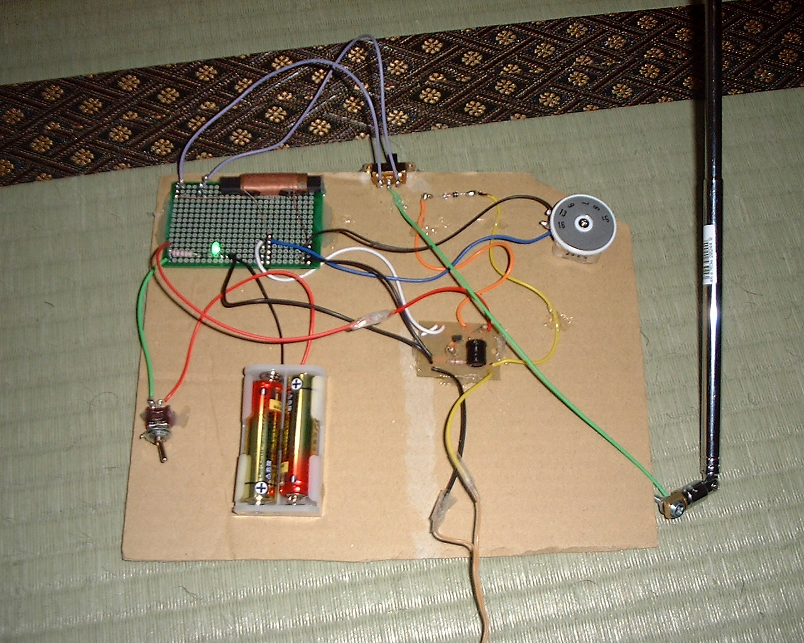

Top
ラジオの製作（その１）
少し前から電子工作を始めています。
工業大学で数学を教えるようになってから、応用について説明するために電気回路を描いたりすることもあるのですが、実践面が全然ともなっていないのがとても不安でした。
いわば「習わざるを伝うる」ような状態であったことが否定できません。
電子工作を始めようと思ったのは、そういう反省からくるネガティブな動機がまずあったのですが、それだけではなく、良い趣味になりそうだというようなポジティブな動機もありました。実際やって見ると、本当に良い趣味になりそうです。
さて、電子工作といえばなんといってもラジオ製作です！
しばらくはこのテーマでやっていくことにします。
かなり無手勝流なので、いろいろトンチンカンなミスを犯しながらになると思います。このページを参考にされる場合は自己責任でお願いしますね。
１．大人の科学マガジン Vol. 4 に別れを告げて…
 実は、今回の話のだいぶ前に、学研の『大人の科学マガジン Vol. 4』を、前哨戦のようなつもりで買ってみました。
これには自作ラジオキットが付録についているのですが、はんだごてが不要だったり、なかなか初心者にやさしい内容になっています。
左の写真が、以前に組み立てたそのキットです
(今回の作業のために増幅回路とダイオードユニットを取り外してあります)。
実は、今回の話のだいぶ前に、学研の『大人の科学マガジン Vol. 4』を、前哨戦のようなつもりで買ってみました。
これには自作ラジオキットが付録についているのですが、はんだごてが不要だったり、なかなか初心者にやさしい内容になっています。
左の写真が、以前に組み立てたそのキットです
(今回の作業のために増幅回路とダイオードユニットを取り外してあります)。
キットを組み立てた当初は、いろいろ実験して「ラジオが聞こえる！」ということにひたすら興奮するばかりでとても楽しいのですが、このキットはあくまで実験用の域を出ません。実験に飽きてくると、だんだん実用上の要求が出てきます。
「ダイオードユニットを回路に固定してしまおう」とか、「アンテナコイルがかさばる」とか…。そういう気持ちが出てきたら、次のステップに進む潮時ということでしょう。
さて、このキットには FET を使った増幅回路がついています
(写真では右下にある、コードがいっぱいついている部品です)。
今回の計画は、新たにバーアンテナとバリコンを買い足してこの増幅回路とつなぎ、新しいラジオを作ってしまおうというものです。
以下のリンクは、その際の作業用ノートを画像として取り込んだものです(ノート０の方はオマケですが)。
作業用ノート０/作業用ノート１
…しかし字が汚い…。それに、端っこが焦げてる…。まあその…、コテ台は用意しておいた方がいいということですね。それから、後から考えるに、下に新聞紙を敷いているのは危険でした。
２．工具
今回使用した工具を紹介しましょう。
上の写真は左から、はんだこて、はんだ、はんだ吸い取り線、はんだ吸取り器、ニッパー、ラジオペンチ、ピンセット、コード付ミノムシクリップ、配線コード、です。
作業台は、壊れた本棚の横板を流用しています。左端のクリップは自作の基板固定器です。
なお、下に新聞紙が敷いてありますが、先程も書いたように、後から考えるとこれは危険です。はんだ作業をするのに、燃えやすいものを近くに置いてはいけません。
左の写真は今回意外と活躍してくれた接着剤（アロンアルファとホットボンド）です。
ホットボンドはもともと電子工作のためではなく、自家製本のために購入したものですが、あるとなにかと便利です。ただし、こちらも高温になるものなので、扱いには要注意です。
工具や部品の入手は、秋葉原で買い物をしたり、ネット通販で買ったりです。
３．ゲルマニウムダイオードを取り付ける
大人の科学マガジンのキットのダイオードユニットを解体して、ゲルマニウムダイオードを FET 増幅器に直接つけてしまうことにしました。
ダイオードのカソード側 (黒い線が入っているほう) には黄色い線、アノード側にオレンジの線をつけてはんだ付けします。
ゲルマニウムダイオードは熱に弱いという話をどこかで聞いたので、ちょっと心配でしたが、大丈夫だったようです。
実際には、この作業から次の作業の間には少しタイムラグがあって、何週間か空いています。もし一連の作業としてやっていたら、このゲルマニウムダイオードは基板に乗せていたことでしょう。
４．同調回路をつくる
バーアンテナの説明書をよく見ながら (というか先程の「作業ノート１」を見ながら)。
同調回路を組みます。
バーアンテナはホットボンドで基板に貼り付けてしまいました。
画像の下側にある部品はポリバリコンです
(ちなみにポリバリコン側のはんだ付けはとてもヘタクソです。あんまり見ないで…(^^;)。
上側に伸びている紫色の線は、スライドスイッチにつながっています。
とりあえずスイッチ側のアンテナ線にはロッドアンテナをつなぐことにしたのですが、これがどれだけ意味があるのかは分かりません。
ＡＭラジオであっても、ロッドアンテナを伸ばすと感度が良くなることがある、という話をどこかで聞いたことがあるので、気休め程度に用意してみたのです。
あくまでメインの部分はバーアンテナとポリバリコンの同調回路です。
５．電源パート
まず、電池ケースとトグルスイッチをつなぎます。
あと、緑色 LED を電源表示用のランプとしてつけてみました。
抵抗と一緒に基板に乗っているのがそれです。
下の写真は、この状態でトグルスイッチを ON にしてみたものです。
LED のアノードとカソードを間違えてなかったことがこれで分かります
(LED の場合、足の長いほうがアノード)。

６．ＦＥＴ増幅器＋検波回路＋イヤホンを接続
先程ゲルマニウムダイオードを取り付けた増幅回路を上の基板に接続します。
黒い線を同調回路のアース側 (…といっても、実際にはアースはつけてないけど) と電源の負極側、赤い線はトグルスイッチをはさんだ電源の正極側、白い線を同調回路のアースとは反対側にそれぞれはんだ付け。
そして、残っている黒い線と黄色い線にクリスタルイヤホン (これもキットに付属していたもの) を接続すれば、これでラジオになっているはずです。
この状態で電源を入れて、バリコンのダイヤルを探ってみると…(ドキドキ)…聞こえました！実験成功です！
７．ケースへの取り付け

…「ケースって、どこが？」とか言わないで(^^;)。
ええ…、ダンボールに接着剤で貼り付けているだけですがね。
右の写真は、聞いている状態です。感度は、『大人の科学マガジン』キットのアンテナコイルよりだいぶ良いようです。
ラジオ局によってはわりと実用に耐えるくらいにはなっています。
しかしロッドアンテナは、本当に気休めでした(^^;)。まあ予想はしてましたが…。
２００７年３月
トップページ